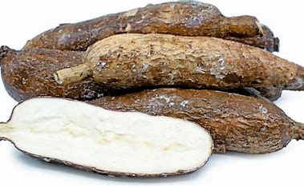
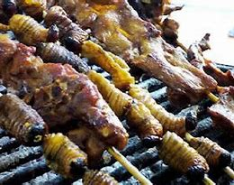
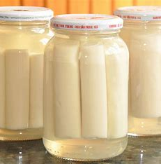

Ingredientes Principales
-
Yuca
La yuca, también conocida como mandioca, es un ingrediente básico en la dieta del Oriente ecuatoriano desde tiempos precolombinos. Rica en almidón, es una fuente importante de energía. Para prepararla, pélela cuidadosamente, córtela en trozos y hiérvala en agua con sal hasta que esté suave. También se puede freír para hacer deliciosas yucas fritas o convertirla en puré para acompañar otros platos.
-
Chontaduro
El chontaduro, fruto de la palma, ha sido consumido por las comunidades indígenas amazónicas durante siglos, siendo una excelente fuente de proteínas y carbohidratos. Se cocina en agua hirviendo con sal durante unos 40 minutos. Una vez cocido, se puede pelar y consumir directamente, acompañado de miel o sal, y es un símbolo de la riqueza natural de la Amazonía.
-
Pescado fresco

Los ríos del Oriente ecuatoriano proveen pescados frescos como la tilapia o el bagre, esenciales en la gastronomía local. Los pescados no solo son deliciosos, sino también una fuente clave de proteínas. Para prepararlo, límpielo bien, sazone con sal, ajo y limón, y luego cocínelo asado, frito o hervido, según la tradición culinaria de cada región.
-
Palmito
El palmito, extraído del corazón de las palmas, es un ingrediente refinado que representa la armonía entre la recolección sostenible y la tradición. Se pela, se corta en rodajas finas y se hierve en agua con sal. Este ingrediente, valorado tanto local como internacionalmente, se utiliza en ensaladas, sopas y como acompañamiento para resaltar sabores tropicales.
-
Plátano verde

El plátano verde es un pilar de la cocina ecuatoriana, considerado un "pan tropical" por su versatilidad. Desde tiempos ancestrales, las comunidades lo han usado para preparar patacones, bollos y sopas. Para prepararlo, pélelo y utilícelo en diferentes formas según la receta, ya sea frito, hervido o asado, para disfrutar de su sabor único.